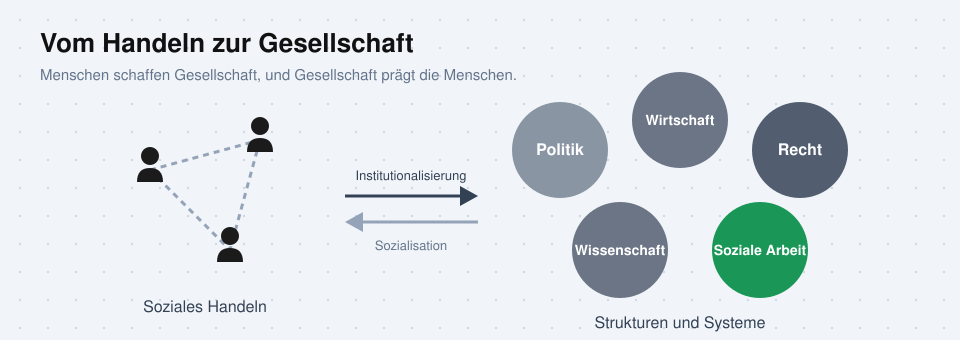

Soziologische Grundlagen
Interaktives Skript · Soziale Arbeit (B. A.), OTH Regensburg
Willkommen

Im Alltag sprechen wir ständig von „der Gesellschaft“, ohne genau zu sagen, was wir damit meinen. Die Soziologie macht genau das zu ihrem Gegenstand. Sie fragt, wie Menschen zusammenleben, wie aus ihrem Handeln stabile Strukturen entstehen und wie diese Strukturen wiederum auf die Menschen zurückwirken.
Für die Soziale Arbeit ist das keine abstrakte Frage. Armut, Wohnungslosigkeit oder Bildungsbenachteiligung sind nicht nur individuelle Schicksale, sie haben gesellschaftliche Ursachen. Wer nur den Einzelfall sieht, übersieht die Strukturen. Wer nur die Strukturen sieht, übersieht den Menschen. Die Lehrveranstaltung Soziologische Grundlagen stellt die Begriffe und Theorien bereit, mit denen sich beides zusammen denken lässt.
Das Skript begleitet die Sitzungen. Es bündelt die zentralen Inhalte, erläutert Theorien und Begriffe und bietet Lernspiele, mit denen Sie Ihr Wissen anwenden können. Es ersetzt nicht die Lektüre und die Teilnahme an den Sitzungen, erleichtert aber das Nacharbeiten und die Vorbereitung auf das Kurzpaper.
Ziele der Lehrveranstaltung
Die Lehrveranstaltung verfolgt drei Ziele. Sie lernen,
- soziologisch zu denken, also individuelle Erfahrungen auf gesellschaftliche Zusammenhänge zu beziehen,
- das Verhältnis von Individuum und Gesellschaft zu verstehen, also wie Menschen Gesellschaft hervorbringen und zugleich von ihr geprägt werden,
- soziale Problemlagen mithilfe soziologischer Theorien zu analysieren und daraus begründete Folgerungen für die Praxis der Sozialen Arbeit abzuleiten.
Jede Sitzung folgt dazu denselben vier Fragen: Was besagt der Ansatz (Theorie)? Was lässt sich damit erklären (Analyse)? Was bedeutet das für die Soziale Arbeit (Praxis)? Wo liegen seine Grenzen (Reflexion)? Ein durchgängiges Fallbeispiel, die 16-jährige Mira, macht sichtbar, was jede Theorie leistet.
Wo Sie anfangen können
Sitzungen · Seminarüberblick
Vier Blöcke: Gesellschaftstheorien, Individuum und Gesellschaft, Sozialstruktur und Ungleichheit, Wandel und Sozialraum.
Hinweis zur Transparenz
Künstliche Intelligenz wurde eingesetzt, um die Lernspiele zu programmieren, Texte und Erläuterungen auf Grundlage der Seminarfolien zu entwerfen und die Abbildung auf dieser Seite zu erstellen. Alle Inhalte wurden vom Autor geprüft, der für sie verantwortlich ist.